Stage 1I — The First VM Running on KubeVirt
Look first. Turn on Learning Mode only if you want a short explanation under each picture.
LIVE CHECK = a read-only inspection of the running VM made while preparing this page (2026-10-01, 10:46 UTC: pod spec, virsh domain XML, ps, ip addr, Service and endpoints). It is not part of the Stage 1I record and changed nothing. Everything else comes from the Stage 1I record.
Understand the mission
Stop after this level and you already know what Stage 1I achieved.Mission chain: ESXi VM to nginx on KubeVirt
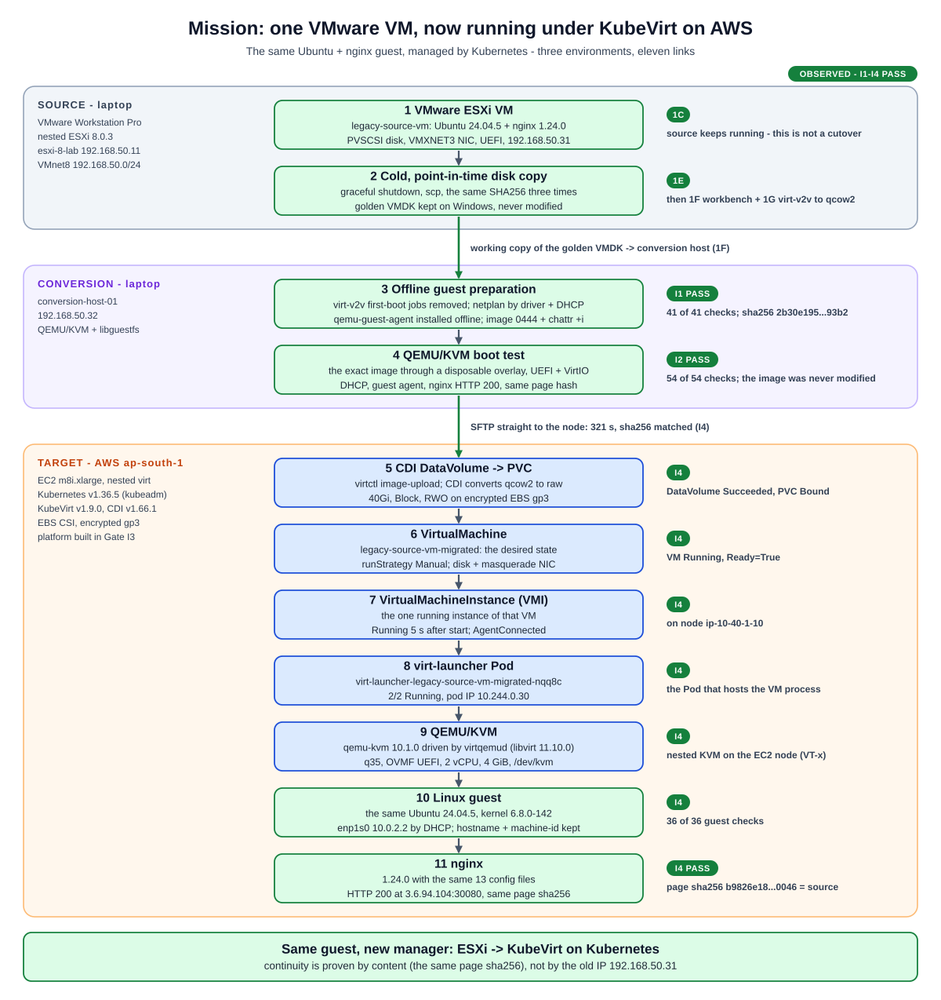
One VM made a three-environment trip. Source: the running VMware VM, copied cold at one point in time (Stage 1E). Conversion: the disk was prepared offline (I1) and boot-tested under QEMU/KVM (I2). Target: on AWS, CDI wrote it into a PVC, and KubeVirt turned a VirtualMachine into a running VMI, a virt-launcher Pod and a qemu-kvm process. Inside it are the same Ubuntu and nginx. The source VM is back in service on ESXi, and Stage 1I never touched it.
The migration pipeline: 18 numbered steps
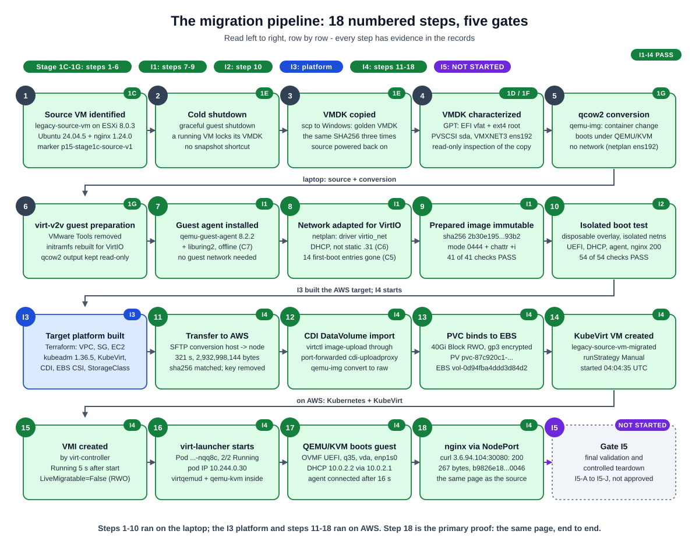
Steps 1 to 6 are earlier Stage 1 work. I1 changed the guest offline (guest agent, network by driver, first-boot cleanup) and froze the image. I2 booted that exact image in isolation. I3 built the AWS platform. I4 moved the image, imported it with CDI, created the VM and proved it end to end. I5 is final validation and controlled teardown, defined in the record as sub-gates I5-A to I5-J. It has not started and needs explicit approval.
Understand where things run
Real machines, real addresses, real boundaries.Infrastructure: laptop lab + AWS target
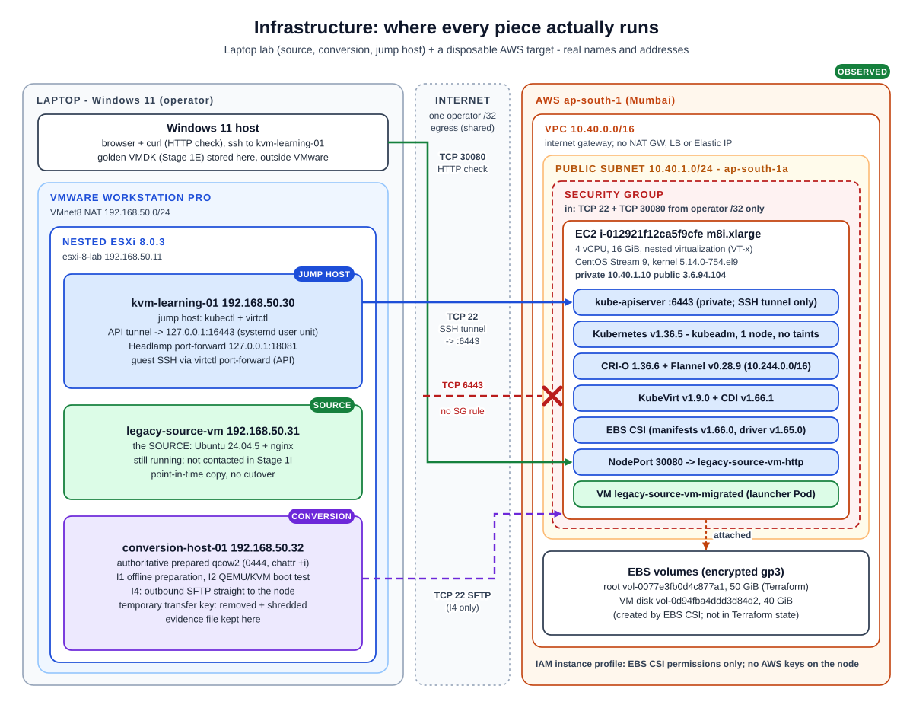
Everything on the left runs on one laptop. Everything on the right is one EC2 instance in one public subnet. Only three kinds of traffic cross the Internet, all from the operator's single /32: HTTP to NodePort 30080, the SSH tunnel to the API (TCP 22), and the one-time SFTP transfer in I4. TCP 6443 has no security group rule, so the Kubernetes API is reached only through the SSH tunnel.
What actually runs where?
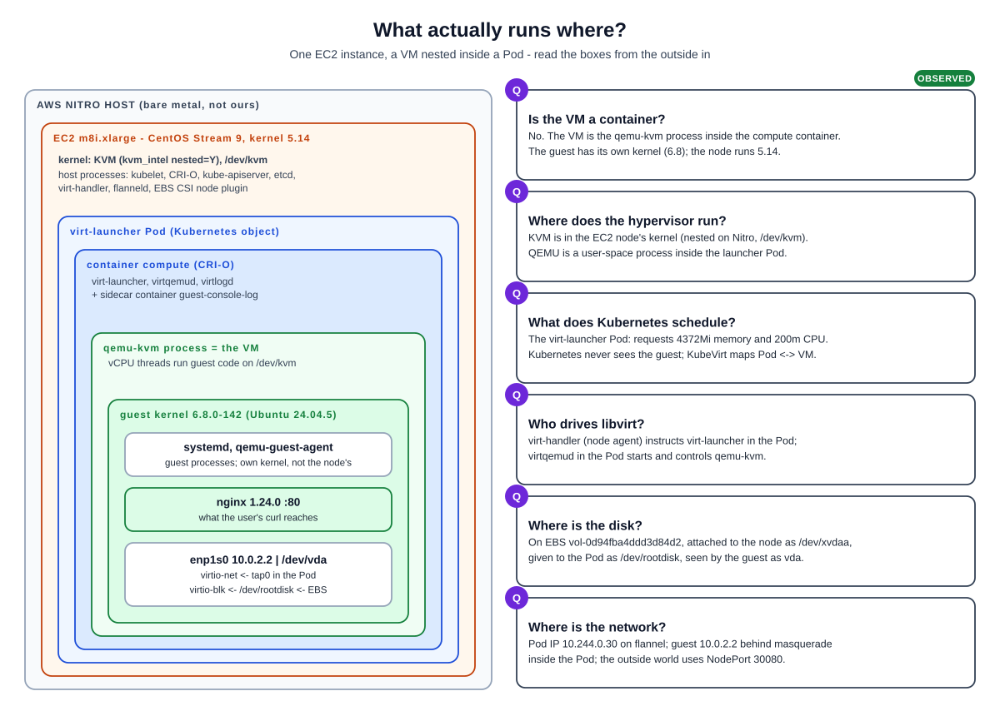
Read from the outside in. The VM is not a container: it is a qemu-kvm process inside the compute container of a Pod, and the guest runs its own kernel (6.8, while the node runs 5.14). Kubernetes schedules the Pod. KVM in the node kernel accelerates the vCPUs, nested on AWS Nitro.
Understand KubeVirt from the inside
Objects, owners and the hypervisor process.KubeVirt object model: who owns what
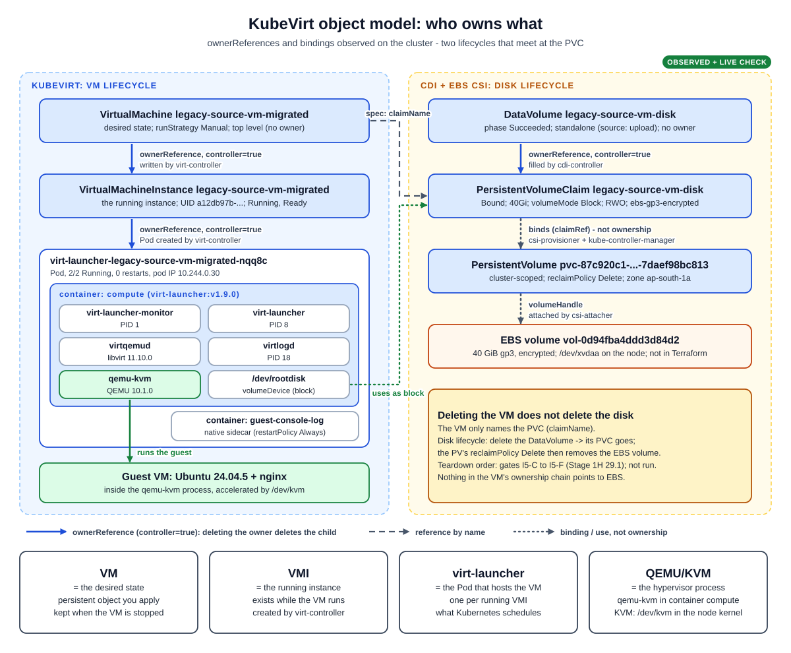
Two separate lifecycles meet at the PVC. VM lifecycle: the VirtualMachine (desired state) owns the VMI (the running instance), which owns the virt-launcher Pod. Disk lifecycle: the DataVolume owns the PVC, the PVC binds a PV, and the PV points at the EBS volume. The VM only names the PVC, so deleting the VM leaves the disk in place. The DataVolume controls the disk's lifecycle.
QEMU/KVM anatomy inside the virt-launcher Pod
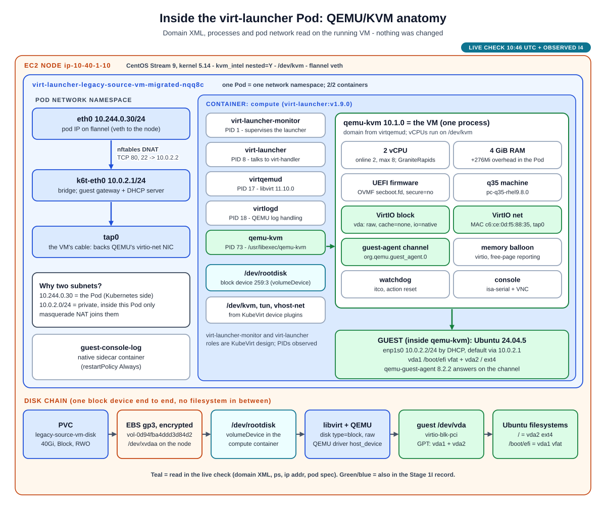
One Pod contains everything the VM needs. Its network namespace has the Pod side (eth0, 10.244.0.30), a bridge (k6t-eth0, 10.0.2.1) and tap0, the VM's virtual cable. The compute container runs libvirt (virtqemud, virtlogd) and the qemu-kvm process, which is the VM. The disk arrives as the raw block device /dev/rootdisk. QEMU opens it as a host_device, and the guest sees it as vda. The device list, process list and /dev/rootdisk come from the read-only live check.
Understand network, storage and the guest
One packet, one disk, one operating system.Packet path: one HTTP request
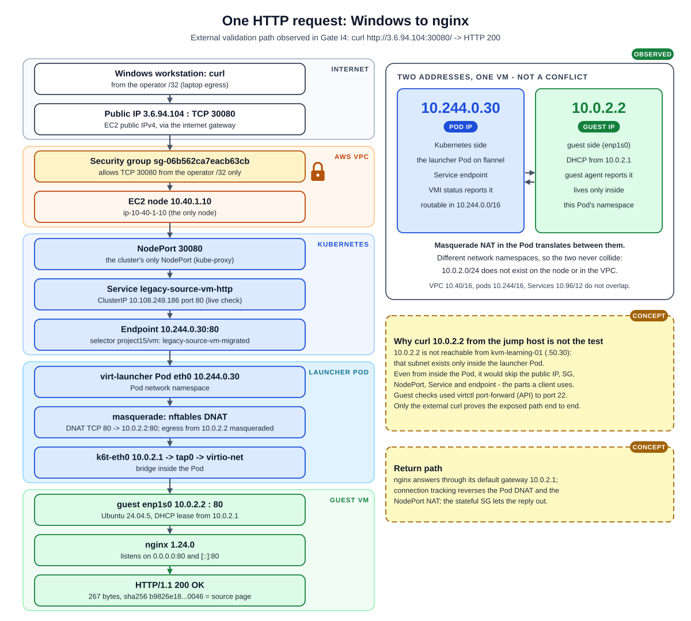
The request crosses five zones: Internet, AWS, Kubernetes, the launcher Pod and the guest. 10.244.0.30 is the Pod's address, which Kubernetes uses. 10.0.2.2 is the guest's address, private to that Pod. Masquerade NAT joins the two, so they never conflict. Curling 10.0.2.2 from the jump host proves nothing: that address is not reachable from there, and even inside the Pod such a test would skip the security group, the NodePort and the Service. Only the external curl tests what a client uses.
Storage lifecycle: qcow2 to vda
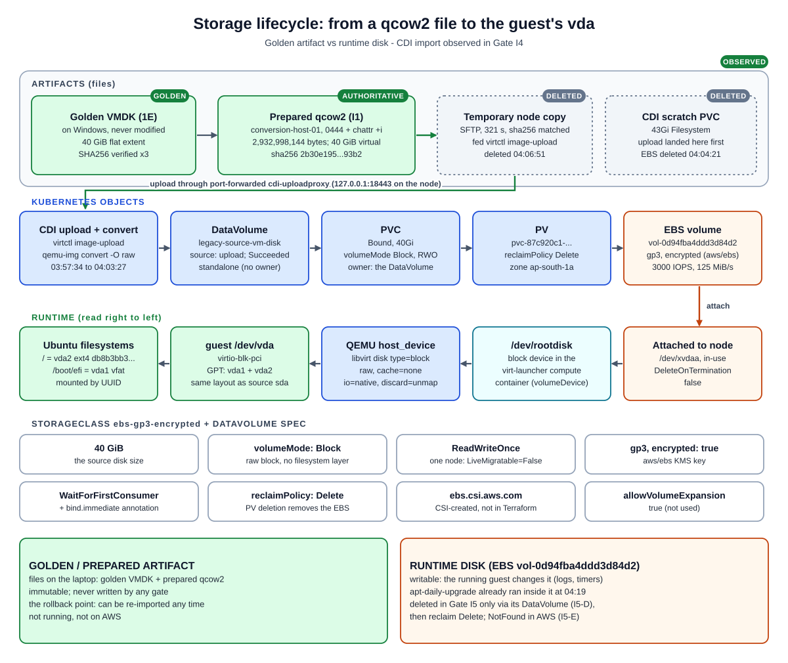
The golden and prepared files stay on the laptop, immutable, as the rollback point. A temporary copy went to the node. CDI uploaded it and converted it to raw on a 40 GiB Block, RWO, encrypted gp3 volume, and the temporary copy and scratch volume were then deleted. The runtime disk on EBS is writable and changes as the guest runs. RWO is why LiveMigratable=False. Reclaim Delete means removing the PV removes the EBS volume.
Inside the guest: same Ubuntu, new platform
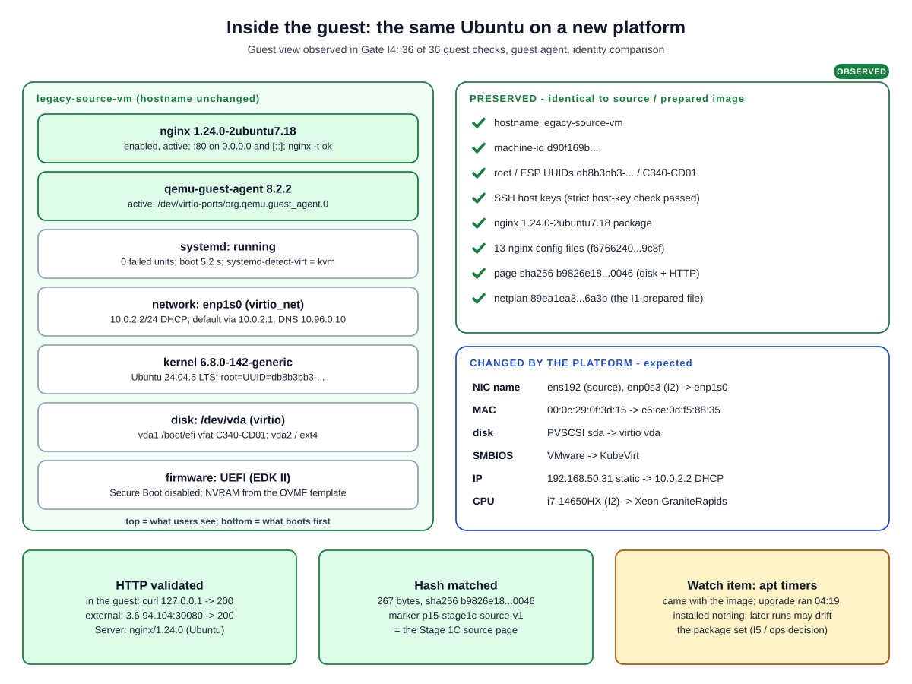
What the user sees is unchanged: the same hostname, machine-id, filesystem UUIDs, SSH host keys, nginx package and configuration, and page hash. What the platform supplies changed: the NIC is now enp1s0, plus a new MAC, virtio disk, KubeVirt SMBIOS and the 10.0.2.2 address. The netplan match by driver from I1 is why the new NIC name did not matter. The stock apt timers came along with the image, which is a drift item for I5 or operations to decide.
Understand security and evidence
What is reachable, and what proves it worked.Security boundaries
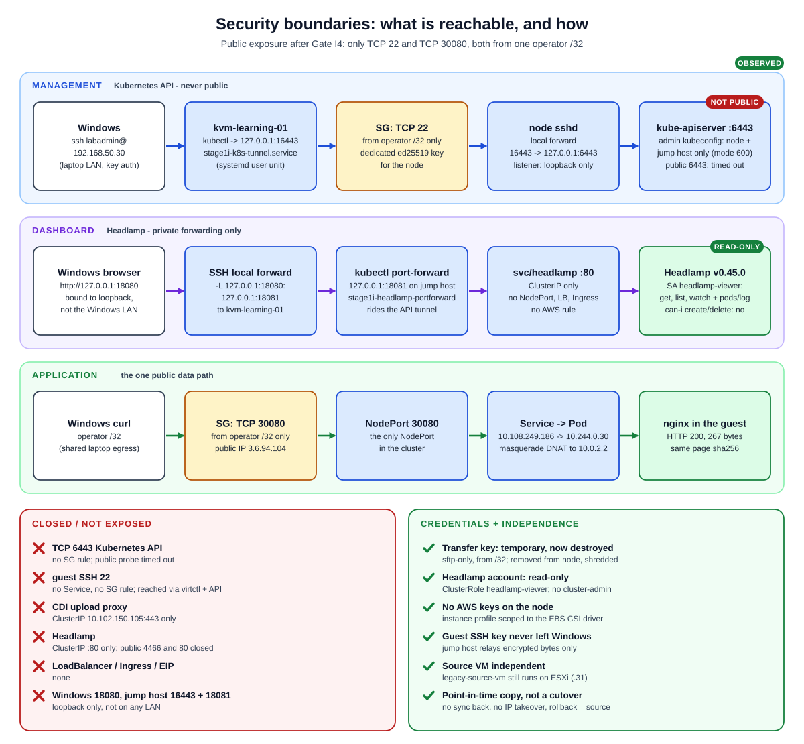
There are three lanes. The API is reached only through an SSH tunnel to the node's loopback. Headlamp is reached only through two loopback forwards, and logs in with a read-only account. The application is the one public data path, open only to one /32. Everything else is closed: 6443, guest SSH, the CDI upload proxy and Headlamp itself. The transfer key was temporary and is destroyed. The source VM is untouched: this was a point-in-time copy, not a cutover.
Evidence dashboard: I1 to I5
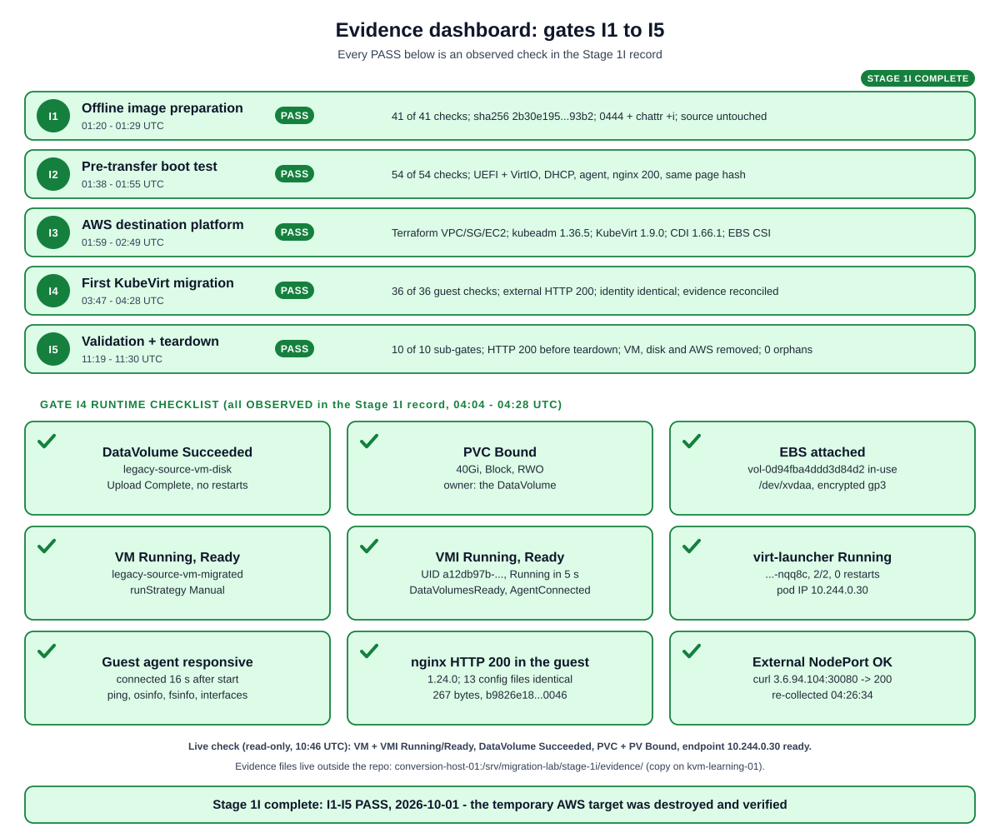
Each PASS is backed by checks in the Stage 1I record: 41/41 for I1, 54/54 for I2, a fully healthy platform for I3, and 36/36 guest checks plus external HTTP for I4. "DataVolume Succeeded" alone proves only that CDI finished writing. The image was proven by the transfer hash, and the guest by boot, identity and HTTP checks.
One request, one disk, one VM
The whole result on one page
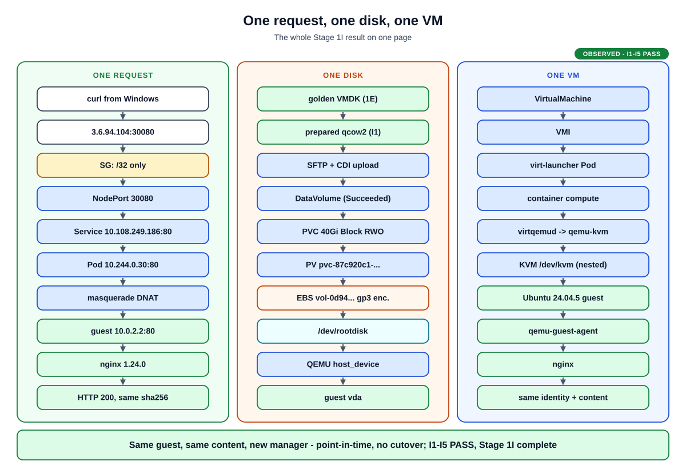
Three chains tell the whole story. A request enters through one public port and reaches nginx. A disk goes from an immutable file to a block device the guest calls vda. A VM is a Kubernetes object that ends up as one qemu-kvm process. The guest and its content are the same; only the manager changed.
Stage 1I interview questions
Click a question; each answer links to its diagram.Q1 Walk me through how you moved the VM to KubeVirt.
Cold point-in-time copy of the ESXi disk, virt-v2v plus an offline preparation (guest agent, netplan by driver with DHCP), an isolated QEMU/KVM boot test, SFTP to the node, CDI upload into a 40Gi Block PVC on encrypted EBS, one VirtualMachine with masquerade networking, then validation through the public NodePort.
Q2 What is the difference between a VM, a VMI and virt-launcher?
The VirtualMachine is the persistent desired state. The VMI is the running instance it owns. virt-launcher is the Pod the VMI owns, which hosts the qemu-kvm process.
Q3 Where does QEMU run, and what does KVM do?
qemu-kvm 10.1.0 runs in the compute container of the launcher Pod, driven by virtqemud. KVM is the kernel module on the EC2 node (/dev/kvm, nested on Nitro) that runs the guest's vCPUs in hardware.
Q4 How did the disk get into Kubernetes, and who owns it?
virtctl image-upload through a port-forwarded cdi-uploadproxy. CDI wrote to a scratch PVC, converted the qcow2 to raw onto the Block PVC, then deleted the scratch PVC. The DataVolume owns the PVC; the VM only references it.
Q5 Why does the VMI show 10.244.0.30 when the guest has 10.0.2.2?
With masquerade, KubeVirt reports the Pod's IP. The guest gets 10.0.2.2 by DHCP from k6t-eth0 inside the Pod's own network namespace, and nftables DNAT joins the two.
Q6 Can this VM live-migrate?
No. Its disk is RWO EBS, so the VMI reports LiveMigratable=False (DisksNotLiveMigratable). That is acceptable for a single-node cold migration. Live migration would need RWX storage and more than one node.
Q7 How did you keep the API and the dashboard private?
There is no security group rule for 6443. The API runs over an SSH local forward to the node's loopback. Headlamp is a ClusterIP Service, reached by a kubectl port-forward on the jump host plus an SSH forward from Windows, all on 127.0.0.1, with a read-only service account.
Q8 What proves the migration worked?
End to end: curl to 3.6.94.104:30080 returned HTTP 200 with the source page's sha256. The guest's hostname, machine-id, UUIDs, SSH host keys and nginx configuration were identical, and the guest agent was connected.
Q9 What would you build next?
That is a later decision, and none of it is built: warm migration (MTV/Forklift), a migration controller with a VirtualMachineMigration CRD, multi-node KubeVirt with RWX storage, or modernizing nginx into a container.
The whole story
Stage 1I put the same VM under Kubernetes.
I1 – I4 PASS. I5 has not started.
5 things to remember
The VM object is desired state; the VMI and its Pod are what runs.
The VM is a qemu-kvm process inside a Pod, accelerated by KVM.
The DataVolume, not the VM, owns the disk.
Pod IP and guest IP live in different places; masquerade joins them.
Proof is end to end: the same page hash through the public NodePort.
Not part of Stage 1I
Kept apart on purpose: nothing below is deployed or tested.Future / reference panel
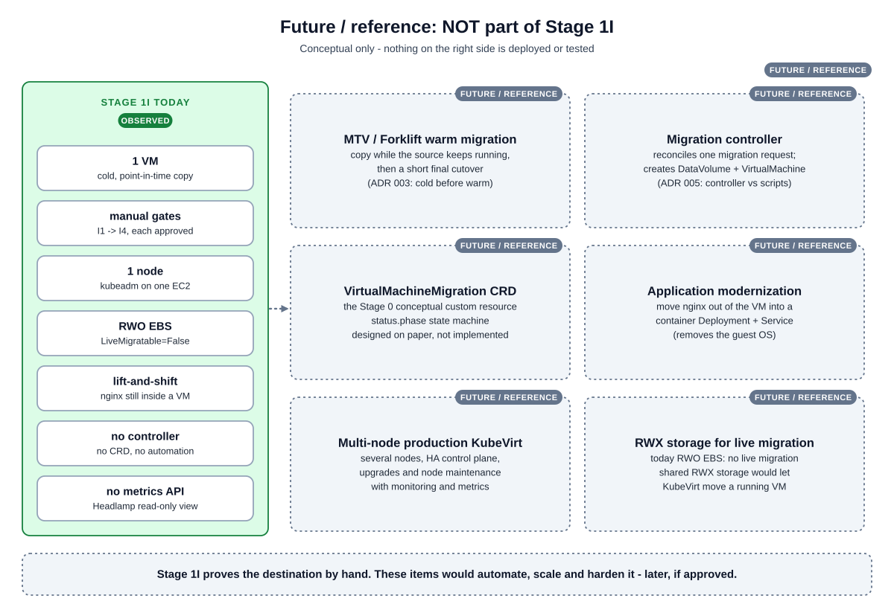
Stage 1I proved the destination works for one VM, by hand, gate by gate. The dotted items are references only: warm migration, automation through a controller and CRD (Stage 0 design), modernization, and production-grade multi-node KubeVirt with RWX storage for live migration. None of them is approved or built.
- Stage 1I record: gates I1-I4, I5 definition (section 19)
- Stage 1I pre-I5 runtime snapshot (read-only)
- 1H KubeVirt target feasibility
- 1H architecture review
- Stage 1 README
- Stage 1 visual learning (1A-1H)
- Stage 0 visual learning
- Manifests: VM, DataVolume, Service, StorageClass
- Terraform: stage-1i-target
- ADR 003, ADR 005, ADR 007, ADR 008, ADR 009, ADR 010
- Documentation home